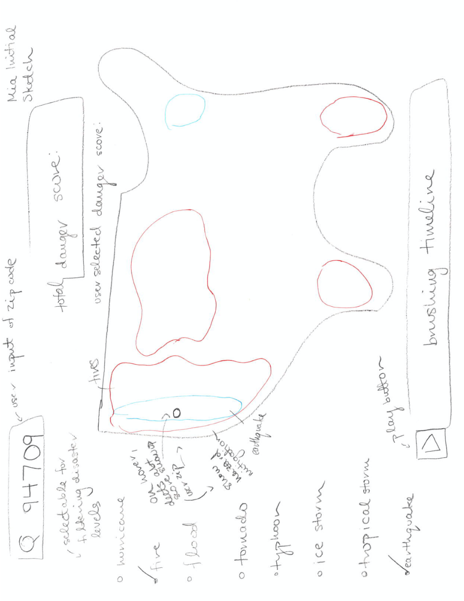
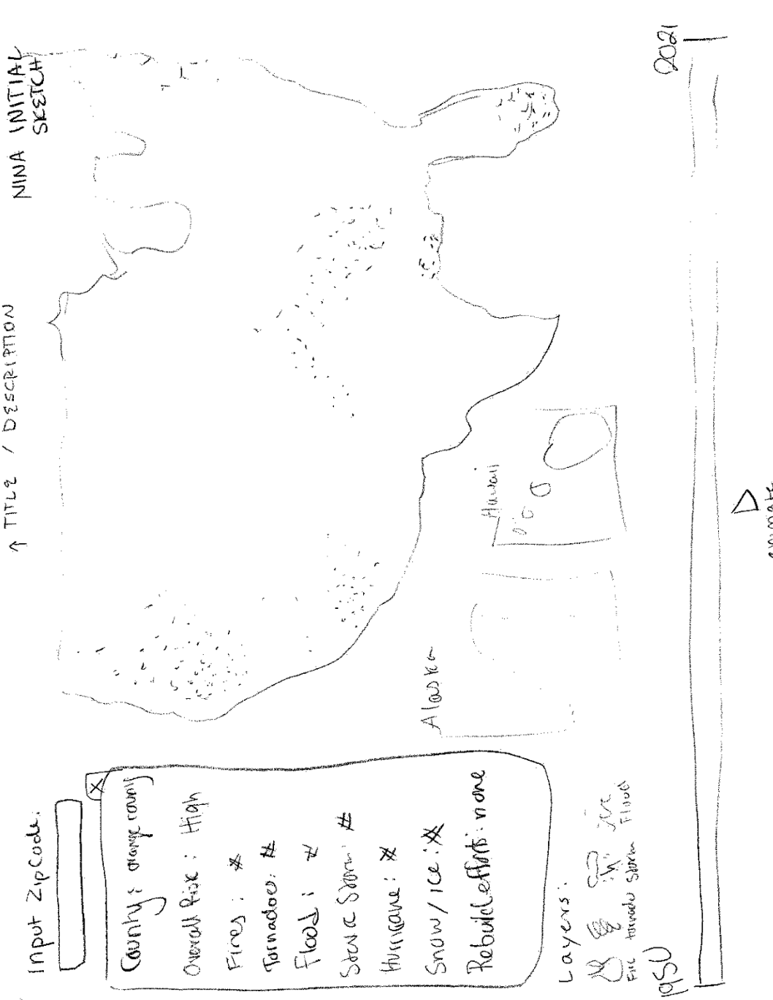
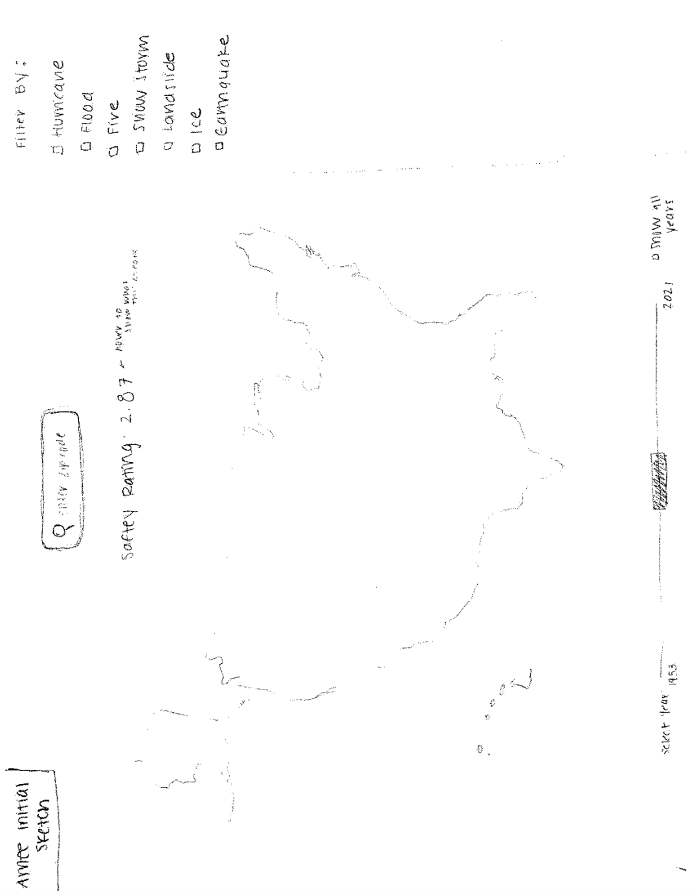
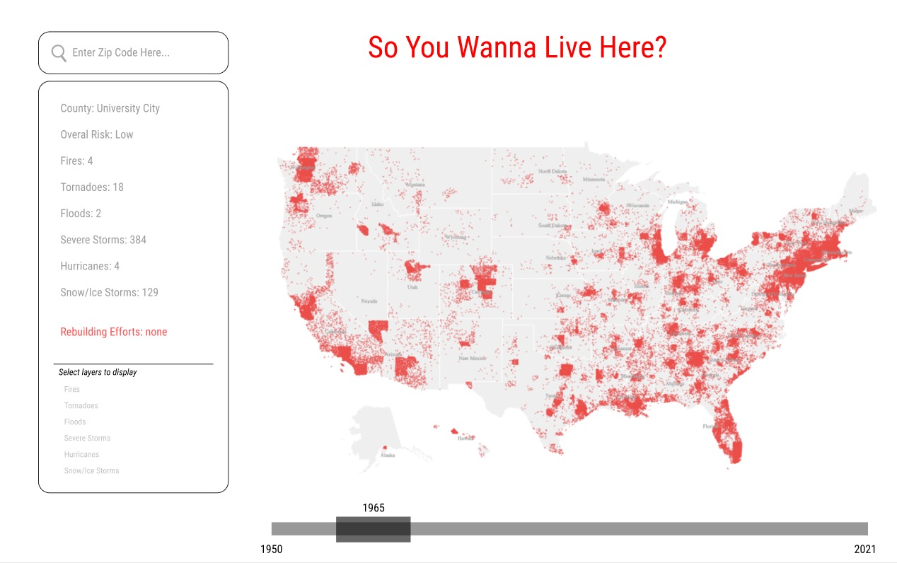

Oftentimes, climate change data is simply informational rather than actionable, thus we wanted to put a more applicable spin on presenting this data that will encourage and inform viewers on how to take action. As soon-to-be college graduates, geographical location is hot on our minds and there are tradeoffs to anywhere you choose to live. This map is a tool for people who are moving and want to know how prone their new location is to natural disasters. We also want to acknowledge the fact that certain geographical regions are neglected in terms of infrastructure and struggle to rebuild after a disaster, which is another factor to think about. We want to display the increasing number of natural disasters as a result of climate change, and acknowledge the impact that they have had on communities all over the country.
The primary question we are trying to answer with this visualization is whether or not an area is safe to live in, in terms of the frequency of natural disasters. Many areas have become hot spots for fires, tornados, hurricanes and floods. Some people moving to these locations may be unaware of these environmental factors, and invest in high risk properties, or move their families to unsafe locations. We want to create a tool that allows people to see the climate risks of towns and counties so that they can be better informed on what houses to rent or buy.
Derived from FEMA (Federal Emergency Management Agency)
View the data here.Quantities deriving from dataset:
The first three sketches are our individual visions of what our page should look like, while the last mockup (made with figma) is the combined design that we have agreed on.
Mia's draft:
Nina's draft
Amee's draft
Final draft:
| Week | Goals |
|---|---|
| Week 1: | Create page and import and parse data. Design repository/code structure. |
| Week 2: | Create initial map and user flow in the webpage. |
| Week 3: | Add data to map. Finalize how to display the data on the map design-wise. |
| Week 4: | Add search functionality and popup. |
| Week 5: | Add brushing over time, and improve overall design and experience. |
| Week 6: | Improve design and usability, fix bugs. Assess feasibility of optional features. |